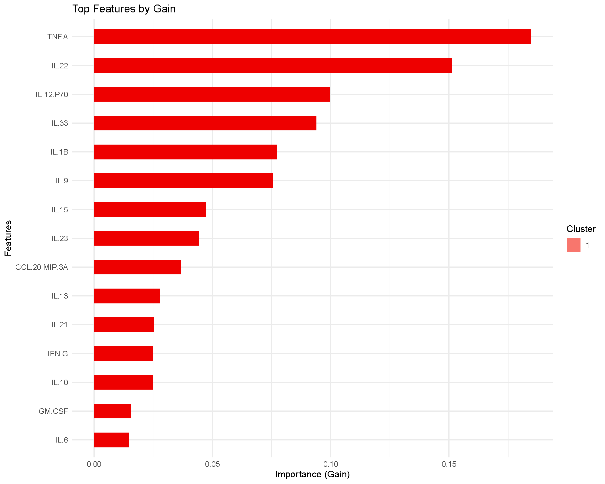
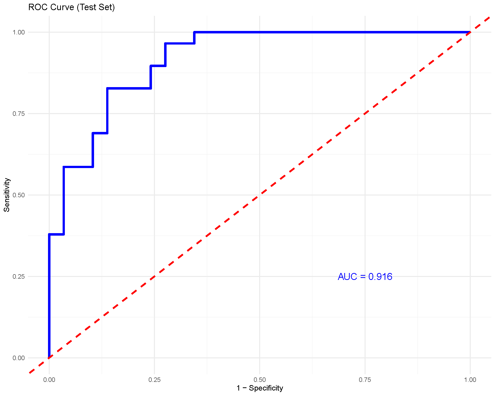

When to use XGBoost
XGBoost is a supervised boosting method that builds many trees in sequence, with each new tree trying to correct mistakes made by the earlier ones. It is often useful when you want a highly flexible classifier and are willing to pay more attention to tuning and validation than you would for Random Forest.
When not to use XGBoost
XGBoost is usually not the best first choice when:
- you want the simplest robust baseline classifier rather than an aggressively tuned one
- the dataset is small enough that tuning instability is a major concern
- the outcome is numeric rather than categorical
Example context
This example uses the ExampleData1 dataset after
filtering to subjects with Pre-Diabetes (PreT2D) and Type 2 Diabetes
(T2D).
Which app arguments matter most
The arguments that most affect interpretation are:
-
Grouping Column: defines the classes the model is trying to predict. -
Train Fraction: controls how much data is kept for model training versus held-out testing. -
Number of Rounds: controls how long boosting continues. -
Maximum Depth: controls how complex each tree can become. -
Learning Rate: controls how aggressively each round updates the model. -
Evaluation Metric: determines what the training process tries to optimize. -
Top Number of Features: changes how many ranked features are shown in the importance display. -
Plot ROC (Binary Only),Cross-Validation, andNumber of Folds: control how much validation context you get when judging model performance.
These settings interact with one another. For example, a lower learning rate often needs more boosting rounds, while deeper trees may improve fit at the cost of overfitting.
What outputs matter most
Feature importance by gain

The importance plot ranks features by gain, which measures how much splits using that feature improved the training objective across the boosted trees.
This is a model-based importance score, so it is best read as “what the classifier relied on most,” not as a formal statistical ranking.
ROC and AUC

For binary classification, the ROC curve and AUC provide a compact summary of discrimination performance. An AUC around 0.92, as shown here, suggests strong separation between the two groups in this example.
As with any supervised method, this should still be interpreted together with the validation strategy and the size of the held-out test set.
Common cautions
XGBoost is powerful, but it is also easier to overfit than simpler methods if the tuning becomes too aggressive.
Watch especially for:
- very deep trees
- many rounds without adequate validation
- strong training performance with much weaker held-out performance
- unstable conclusions from very small datasets
When in doubt, use cross-validation and a conservative learning rate rather than pushing the model to fit as tightly as possible.
Practical guidance for the main arguments
- Number of rounds: more rounds let the model learn longer, but only help if validation supports the extra complexity.
- Learning Rate: lower values are often safer, but they usually require more rounds.
- Maximum Depth: deeper trees capture more interactions but overfit more easily.
- Evaluation Metric: choose a metric that matches the study design.
aucis natural for binary classification, whilemloglossis often more appropriate for multiclass settings. - Train Fraction and Cross-Validation: these settings determine how honestly the model is being checked on unseen data.
- Top Number of Features: use this to improve readability of the importance plot, not to tune the model itself.
How to reproduce the result in the app
- Filter the dataset to the classes you want to compare.
- Choose
Extreme Gradient Boosting (XGBoost). - Start with moderate values for
Number of Rounds,Learning Rate, andMaximum Depth. - Enable
Cross-ValidationorPlot ROC (Binary Only)when available. - Read the importance and performance outputs together before drawing biological conclusions.

What to read next
Related articles:
- Understanding Random Forest for a simpler and often more stable first classifier.
- Understanding (s)PLS-DA for a supervised latent-component alternative.
- Understanding Boxplots and Violin Plots when important features need raw-distribution follow-up.
Last updated: April 02, 2026